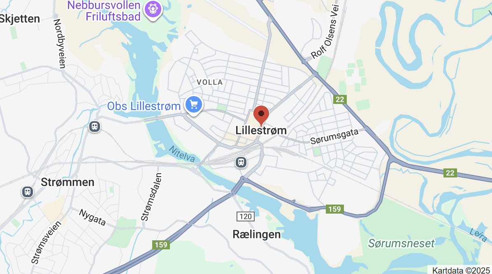
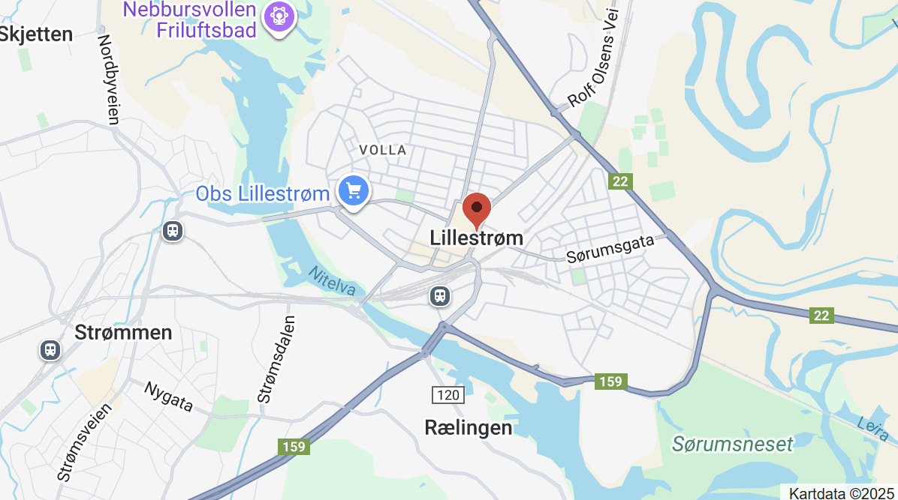

Location
Sørumsgata 386
2000 Lillestrøm
Only 10 min from Oslo by train.
Our lokal train station is 'Lillestrøm stasjon'.
Contact us
+47 38 00 00 00
science-community@museum.com
Opening hours
Monday: Closed
Tuesday: 10:00 - 16:00
Wednesday: 10:00 - 16:00
Thursday: 10:00 - 16:00
Friday: 10:00 - 19:00
Saturday: 09:00 - 16:00
Sunday: 09:00 - 13:00
Admission
The entrance is free for all.
There are guided tours of the museum that leave every hour. These tours are 70 NOK per person and include a handy printed guide of the museum.
If you would like to organise a guided tour for your group of 6 or more people, please contact us to arrange the tour.
Would you like to enter your child or teenager to a group, club or attend “Night at the museum”, please reach out to us to sign up.
Accessibility
The museum has wheelchair accessibility ramps. It also has audio guides and braille display signs for the visually impaired.
Nursing room
There is a nursing room with chairs, changing station and a microwave for families with small children and babies on the 1st floor.
Food and drinks
There is a café attached to the museum where you can get light lunches, soft drinks, coffee, snacks and more. You are also welcome to bring you own food and drinks.
Shop
Our shop offers a range of memorabilia from the museum as well as great gifts and activity packs that allow you to continue to explore science even after you've left the museum.